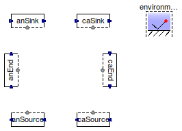
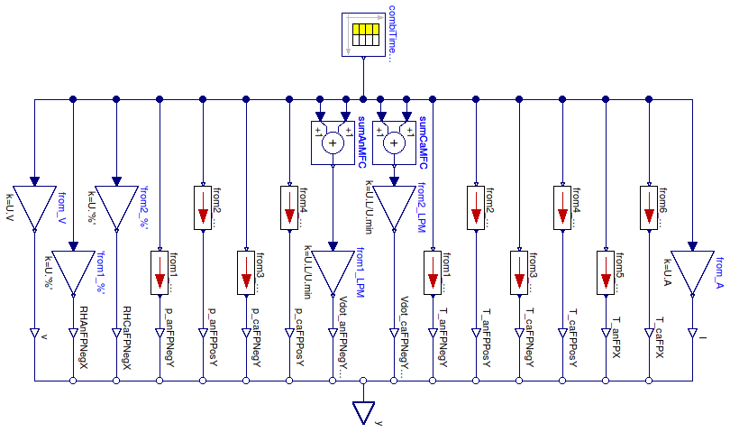

Table of Contents
- User's Guide
- Blocks
- Conditions
- Assemblies
- Regions
- Subregions
- Connectors
- Characteristics
- Units
- Quantities
- BaseClasses
Download
- Latest: FCSys-2.0.zip (**Please check back soon or contact kdavies4 at gmail.com.)

| Name | Description |
|---|---|
| Cell test profile | |
| Replay | Regenerate signals recorded from HNEI's Greenlight FC test stand |
| Base classes (not generally for direct use) |
 FCSys.Conditions.TestStands.TestProfile
FCSys.Conditions.TestStands.TestProfile
model TestProfile "Cell test profile" extends Modelica.Icons.Example; extends BaseClasses.PartialTestStandNoIO; end TestProfile;

| Type | Name | Default | Description |
|---|---|---|---|
| Integer | n | 1 | index of the data set |
| Boolean | terminateMaxTime | true | Terminate at maximum time of source data |
| Type | Name | Description |
|---|---|---|
| RealOutputBus | y | Output signals as a bus |
model Replay "Regenerate signals recorded from HNEI's Greenlight FC test stand" extends FCSys.BaseClasses.Icons.Blocks.ContinuousShort; parameter Integer n(final min=1) = 1 "index of the data set"; parameter Boolean terminateMaxTime=true "Terminate at maximum time of source data"; Modelica.Blocks.Sources.CombiTimeTable combiTimeTable( tableOnFile=true, extrapolation=Modelica.Blocks.Types.Extrapolation.HoldLastPoint, tableName="data" + String(n), fileName="FCSys/test/LOOCV/data.mat", columns=2:19, smoothness=Modelica.Blocks.Types.Smoothness.LinearSegments) "Block to load and replay data"; Connectors.RealOutputBus y "Output signals as a bus"; protected Modelica.Blocks.Math.Add sumAnMFC; Modelica.Blocks.Math.Add sumCaMFC; Modelica.Blocks.Math.Gain from_V(k=U.V); Modelica.Blocks.Math.Gain 'from1_%'(k=U.'%'); Modelica.Blocks.Math.Gain 'from2_%'(k=U.'%'); Blocks.UnitConversions.From_kPag from1_kPag; Blocks.UnitConversions.From_kPag from2_kPag; Blocks.UnitConversions.From_kPag from3_kPag; Blocks.UnitConversions.From_kPag from4_kPag; Modelica.Blocks.Math.Gain from1_LPM(k=U.L/U.min); Modelica.Blocks.Math.Gain from2_LPM(k=U.L/U.min); Blocks.UnitConversions.From_degC from1_degC; Blocks.UnitConversions.From_degC from2_degC; Blocks.UnitConversions.From_degC from3_degC; Blocks.UnitConversions.From_degC from4_degC; Blocks.UnitConversions.From_degC from5_degC; Blocks.UnitConversions.From_degC from6_degC; Modelica.Blocks.Math.Gain from_A(k=U.A); Connectors.RealOutputInternal v(final unit="l2.m/(N.T2)") "CVM Cell 1 Voltage"; Connectors.RealOutputInternal RHAnFPNegX( final unit="1", displayUnit="%", final min=0) "Anode inlet RH"; Connectors.RealOutputInternal RHCaFPNegX( final unit="1", displayUnit="%", final min=0) "Cathode inlet RH"; Connectors.RealOutputInternal p_anFPNegY(final unit="m/(l.T2)") "Pressure anode inlet"; Connectors.RealOutputInternal p_anFPPosY(final unit="m/(l.T2)", final min=0) "Pressure anode outlet"; Connectors.RealOutputInternal p_caFPNegY(final unit="m/(l.T2)") "Pressure cathode inlet"; Connectors.RealOutputInternal p_caFPPosY(final unit="m/(l.T2)", final min=0) "Pressure anode outlet"; Connectors.RealOutputInternal Vdot_anFPNegY_H2(final unit="l3/T") "Flow anode H2 MFC"; Connectors.RealOutputInternal Vdot_caFPNegY_air(final unit="l3/T") "Flow cathode H2 MFC"; Connectors.RealOutputInternal T_anFPNegY( final unit="l2.m/(N.T2)", displayUnit="K", final min=0) "Temperature anode inlet"; Connectors.RealOutputInternal T_anFPPosY( final unit="l2.m/(N.T2)", displayUnit="K", final min=0) "Temperature anode outlet"; Connectors.RealOutputInternal T_caFPNegY( final unit="l2.m/(N.T2)", displayUnit="K", final min=0) "Temperature cathode inlet"; Connectors.RealOutputInternal T_caFPPosY( final unit="l2.m/(N.T2)", displayUnit="K", final min=0) "Temperature cathode outlet"; Connectors.RealOutputInternal T_anFPX( final unit="l2.m/(N.T2)", displayUnit="K", final min=0) "Temperature end plate anode"; Connectors.RealOutputInternal T_caFPX( final unit="l2.m/(N.T2)", displayUnit="K", final min=0) "Temperature end plate cathode"; Connectors.RealOutputInternal I(final unit="N/T") "Measured load"; equation // Terminate as desired if terminateMaxTime then when time > combiTimeTable.t_max then terminate("The end of the data has been reached."); end when; end if; // Connections from source to unit conversion connect(from_V.u, combiTimeTable.y[1]); connect('from1_%'.u, combiTimeTable.y[2]); connect('from2_%'.u, combiTimeTable.y[3]); connect(from1_kPag.u, combiTimeTable.y[4]); connect(from2_kPag.u, combiTimeTable.y[5]); connect(from3_kPag.u, combiTimeTable.y[6]); connect(from4_kPag.u, combiTimeTable.y[7]); connect(sumAnMFC.u1, combiTimeTable.y[8]); connect(sumAnMFC.u2, combiTimeTable.y[9]); connect(sumCaMFC.u1, combiTimeTable.y[10]); connect(sumCaMFC.u2, combiTimeTable.y[11]); connect(from1_degC.u, combiTimeTable.y[12]); connect(from2_degC.u, combiTimeTable.y[13]); connect(from3_degC.u, combiTimeTable.y[14]); connect(from4_degC.u, combiTimeTable.y[15]); connect(from5_degC.u, combiTimeTable.y[16]); connect(from6_degC.u, combiTimeTable.y[17]); connect(from_A.u, combiTimeTable.y[18]); // Connections from unit conversion to internal outputs connect(v, from_V.y); connect(RHAnFPNegX, 'from1_%'.y); connect(RHCaFPNegX, 'from2_%'.y); connect(p_anFPNegY, from1_kPag.y); connect(p_anFPPosY, from2_kPag.y); connect(p_caFPNegY, from3_kPag.y); connect(p_caFPPosY, from4_kPag.y); connect(Vdot_anFPNegY_H2, from1_LPM.y); connect(Vdot_caFPNegY_air, from2_LPM.y); connect(T_anFPNegY, from1_degC.y); connect(T_anFPPosY, from2_degC.y); connect(T_caFPNegY, from3_degC.y); connect(T_caFPPosY, from4_degC.y); connect(T_anFPX, from5_degC.y); connect(T_caFPX, from6_degC.y); connect(I, from_A.y); // Summations connect(sumAnMFC.y, from1_LPM.u); connect(sumCaMFC.y, from2_LPM.u); // Connections from internal outputs to public output connect(v, y.v); connect(RHAnFPNegX, y.RHAnFPNegX); connect(RHCaFPNegX, y.RHCaFPNegX); connect(p_anFPNegY, y.p_anFPNegY); connect(p_anFPPosY, y.p_anFPPosY); connect(p_caFPNegY, y.p_caFPNegY); connect(p_caFPPosY, y.p_caFPPosY); connect(Vdot_anFPNegY_H2, y.Vdot_anFPNegY_H2); connect(Vdot_caFPNegY_air, y.Vdot_caFPNegY_air); connect(T_anFPNegY, y.T_anFPNegY); connect(T_anFPPosY, y.T_anFPPosY); connect(T_caFPNegY, y.T_caFPNegY); connect(T_caFPPosY, y.T_caFPPosY); connect(T_anFPX, y.T_anFPX); connect(T_caFPX, y.T_caFPX); connect(I, y.I); end Replay;